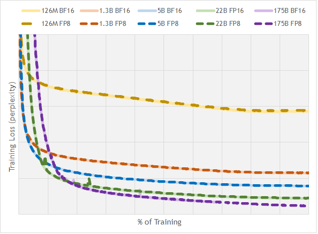
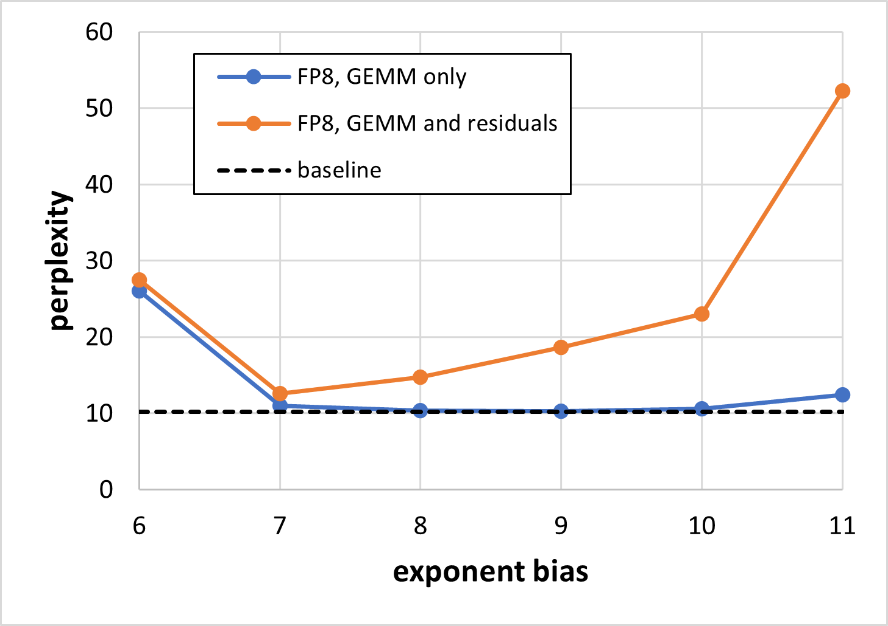

面向深度学习的 8 位浮点格式（FP8）
FP8 Formats for Deep Learning
这篇论文没有配套代码仓库；Transformer Engine 是 NVIDIA 后来按本文推荐做法实现的开源库，不是论文的代码。阅读状态、进度与收藏只保存在你的浏览器里。
逐节精读
这部分按论文的章节顺序，用本站自己的话把整篇论文从头讲一遍。论文正文只有 7 页，很多关键背景（浮点数是怎么存的、缩放因子怎么选、训练里到底哪些张量变成了 8 位）作者都默认读者已经知道，所以本页把这些背景放在第一次用到它们之前单独讲清楚（青色框），篇幅比原文长得多。每个结论都尽量说出“因为什么、所以什么”。论文以 CC BY 4.0 发布，原文的两张图直接放在讲到它们的地方；其余示意图由本站绘制。标“推算”的数字是本站根据论文数据或格式定义算出来的，不是论文原话。每节末尾有英文原文的链接。
0 导读：这篇论文解决什么问题
训练和运行大模型，绝大部分计算是矩阵乘法。矩阵里每个数用多少位来存，直接决定了三件事：芯片上一个乘法器有多大、一次能做多少个乘法，以及每个数在显存和网络里要搬多少字节。2022 年时，训练的主流做法是用 16 位浮点数（FP16 或 BF16）做矩阵乘，推理常用 8 位整数（int8）。把训练也降到 8 位，理论上能让矩阵乘的吞吐再翻一倍、搬运的数据再减半。当年 3 月 NVIDIA 公布的 H100 已经宣布在 Tensor Core 里支持 8 位浮点（FP8），但“FP8 到底长什么样”还没有一个各家公认的定义。
这篇论文由 NVIDIA、Arm、Intel 三家芯片公司联合署名，做了两件事。第一，它定义了一种 8 位浮点的二进制交换格式，包含两种编码：E4M3（4 位指数、3 位尾数，数更准但范围窄）和 E5M2（5 位指数、2 位尾数，范围宽但更粗）。E5M2 完全照搬 IEEE 754 的规则，可以看成是截短了尾数的 FP16；E4M3 则为了多挤出一点范围，放弃了“无穷大”，只留一个 NaN 编码，最大值因此从 240 变成 448。第二，它用“模拟 FP8”的实验说明：只要前向的权重和激活用 E4M3、反向的梯度用 E5M2，再给每个张量配一个缩放因子，各种 CNN、RNN、Transformer 直到 1750 亿参数的 GPT 都能训到和 16 位几乎一样的结果，而且不用改任何超参数；对用 16 位训好的语言模型，直接量化成 E4M3 做推理，也比量化成 int8 好得多。
这两种编码后来几乎原样成了行业标准：Hopper 和 Ada 的 Tensor Core、2023 年开放计算项目（OCP）的 OFP8 规范、PyTorch 的 float8_e4m3fn / float8_e5m2 类型，用的都是这里的定义。今天谈 FP8 训练和推理，起点就是这篇论文。但也要清楚它没有做什么：它的实验全部是在 16 位硬件上“模拟”的，没有测过一次真实的 FP8 速度；它没有给出缩放因子的具体选法；它的训练只把矩阵乘的输入变成了 FP8，其余部分仍是高精度。这些空白后来由 Transformer Engine、DeepSeek-V3 等工作一点点补上。
读完这部分，你应该能回答这几个问题：
- 一个浮点数是怎么用一串 0 和 1 存下来的？指数偏置、隐含的 1、次正规数、NaN 和无穷大各是什么？
- E4M3 和 E5M2 各能表示哪些数？能不能自己把 3.3 编码成这两种格式，并算出误差？
- 同样是 8 位，int8 和 FP8 的“刻度”分布有什么不同，为什么 FP8 更不怕离群值？
- 缩放因子为什么是必须的？为什么每个张量要有自己的缩放因子？“延迟缩放”是什么？
- FP8 训练里，哪些张量用 E4M3、哪些用 E5M2、哪些仍然留在高精度？
- 论文的“与 16 位训练结果相当”是在什么条件下测出来的，这些数字能说明多少问题？
1 引言：为什么下一步是 8 位浮点
1.1 位数少为什么快
一个数用的位数减半，会同时在三个地方带来好处。
- 算得多。芯片里做乘法的电路，规模大致随两个乘数“有效位数”的乘积增长：两个 11 位的数相乘（FP16 的有效位数），要产生约 121 个部分积位；两个 4 位的数相乘（E4M3 的有效位数，含隐含的那一位，下文会解释），只要约 16 个（推算，用来说明数量级，不是论文数字）。电路小了，同样面积的芯片里就能放更多乘法器，同样功耗下能做更多乘法。NVIDIA H100 SXM 的官方规格中，FP8 Tensor Core 的峰值是 3,958 TFLOPS，BF16 是 1,979 TFLOPS（两者都是按 2:4 稀疏计算的数字，稠密计算各减半，约 1,979 与 989 TFLOPS），FP8 正好是 BF16 的 2 倍。
- 搬得少。每个数从 2 字节变成 1 字节，读写显存、在 GPU 之间传输的字节数都减半。很多操作（比如逐元素的激活函数、推理时的解码）本来就是被带宽卡住的，字节数减半就直接意味着更快。
- 存得多。同样大小的显存能放下两倍的权重或激活。
论文在结论里把动机概括为两点：能做出更小、更省电的数学运算单元，以及减轻显存带宽的压力。
深度学习最早用 32 位单精度（FP32）训练。2017 年，本文第一作者 Micikevicius 等人提出了混合精度训练（论文引用 [14]）：矩阵乘的输入用 16 位半精度（FP16），乘完的累加用 32 位；另外保存一份 32 位的“主权重”，每一步的参数更新都加在这份主权重上，再转成 16 位给下一步用。FP16 能表示的最小正数只有约 \(6\times10^{-8}\)，很多梯度比这还小，会直接变成 0，所以他们又引入了损失缩放（第 2 节详细讲）。之后，Google 的 TPU 推广了 BF16（Intel 和 Arm 的作者也写过相关研究，引用 [9]、[3]）：它和 FP32 有一样多的指数位，范围一样大，所以基本不需要损失缩放，代价是尾数只有 7 位。NVIDIA 的 A100 还引入了 TF32：在 Tensor Core 里只用 FP32 的 8 位指数加 10 位尾数做乘法（引用 [19]）。这条路的共同点是：只在矩阵乘的输入上降精度，累加和参数更新仍保持高精度。FP8 沿着同一条路再往下走一步。
1.2 浮点数从零讲起
先回忆科学计数法：\(6.02\times10^{23}\)。它由三部分组成：正负号、一个介于 1 和 10 之间的“有效数字”6.02、一个 10 的多少次方的“指数”23。有效数字决定数有多准（6.02 有 3 位有效数字），指数决定数有多大。浮点数就是二进制的科学计数法：任何一个非零的数都可以写成
比如十进制的 3.5，等于二进制的 \(11.1\)，也就是 \(1.11_2\times2^{1}\)。在二进制里，只要数不为 0，小数点前那一位一定是 1（就像十进制科学计数法里有效数字的第一位一定不是 0），所以没必要存它，这一位叫隐含的 1（hidden bit）。真正要存的是三样东西：
- 符号位 S：1 位，0 表示正，1 表示负。
- 指数字段 E：用若干位存指数 \(e\)。为了让指数既能是正数也能是负数，又能当成无符号整数存，规定存进去的是 \(E=e+\text{bias}\)，这个固定的偏移量叫指数偏置。IEEE 754 的惯例是 \(\text{bias}=2^{k-1}-1\)（\(k\) 是指数位数）：4 位指数的偏置是 7，5 位是 15，8 位是 127。
- 尾数字段 M：存小数点后的 \(m\) 位 \(b_1\cdots b_m\)。论文沿用了“mantissa（尾数）”这个常用叫法，它指的就是 IEEE 标准里的“尾随有效数字字段”，不包括隐含的那个 1。
于是一个“正规数”（normal number）的值是：
手算一个例子。FP16（1 位符号、5 位指数、10 位尾数、偏置 15）里的 3.5，二进制是 0 10000 1100000000：符号 0 为正；指数字段 \(10000_2=16\)，减去偏置得 \(e=1\)；尾数字段 \(1100000000_2=768\)，\(1+768/1024=1.75\)；所以值是 \(1.75\times2^1=3.5\)。
所有指数相同的数构成一个区间 \([2^{e},2^{e+1})\)，浮点数的术语叫一个 binade，本页叫“2 的幂区间”。在一个区间里，尾数有 \(m\) 位，就有 \(2^m\) 个等间距的可表示值，间距是 \(2^{e-m}\)。到了下一个区间，个数不变，间距翻倍。所以浮点数的刻度是“每个区间里均匀、区间之间按 2 倍放大”的。
- 精度看尾数位数：任何一个数舍入到最近的可表示值，相对误差最多是半个间距除以区间下端，即 \(2^{-(m+1)}\)。E4M3（\(m=3\)）是 6.25%，E5M2（\(m=2\)）是 12.5%，BF16（\(m=7\)）约 0.39%，FP16（\(m=10\)）约 0.05%（推算）。
- 范围看指数位数：能用的指数有多少个，就覆盖多少个 2 的幂区间。习惯上用“最大值 ÷ 最小正数”取以 2 为底的对数来衡量，单位就是 binade。指数位每多 1 位，区间个数大约翻一倍。
8 位里去掉 1 个符号位，只剩 7 位可以在指数和尾数之间分配。给指数多一位，范围大约翻倍，但每个数的误差也翻倍。E4M3 和 E5M2 就是这道题的两个答案。
按上面的正规数公式，最小的正数是指数字段取 1 时的 \(2^{1-\text{bias}}\)，再往下就到 0 了，中间有一个“断崖”。IEEE 754 用指数字段全为 0 的编码来填这个缺口：这时不再有隐含的 1，指数固定为 \(1-\text{bias}\)，值是
这些数叫次正规数（subnormal）。它们和最小的那个正规区间有相同的间距，一路等间距地铺到 0，所以数值是“逐渐”下溢到 0 的，而不是突然变成 0。代价是：越小的次正规数，有效数字越少，相对误差越大。最小的次正规数只剩 1 位有效数字。尾数也全为 0 时，就是 ±0（正零和负零是两个不同的编码）。
另一端，IEEE 754 把指数字段全为 1 的编码整个留给特殊值：尾数全 0 表示 ±∞（上溢的结果），尾数不全为 0 表示 NaN（“不是一个数”，比如 0/0 的结果）。对 32 位或 16 位格式来说，留出一整个区间给特殊值几乎不心疼；对 8 位格式来说，这意味着本来就很少的编码又少了一大块。E4M3 的一个关键设计就在这里，第 3 节细讲。
IEEE 格式还有一个不太起眼但很实用的性质：符号相同时，把两个浮点数的位模式当成整数来比大小，结果和比较它们的数值完全一致（因为指数在高位、尾数在低位，而且都是单调编码的）。所以软件可以直接用整数指令比较、排序浮点数。论文在第 3 节为了保住这个性质放弃了一点范围。
1.3 int8 和 FP8：同样 256 个编码，刻度怎么摆
8 位一共只有 \(2^8=256\) 种位模式，所以不管是整数还是浮点数，最多只能表示 256 个不同的数。区别在于这些数在数轴上怎么摆。
int8 推理的常见做法是对称线性量化：先找出张量里绝对值最大的数 amax，令步长 \(\Delta=\text{amax}/127\)，再把每个数 \(x\) 变成整数 \(q=\text{round}(x/\Delta)\)，范围是 −127 到 127。用的时候乘回 \(\Delta\)。这相当于在 \([-\text{amax},\text{amax}]\) 上等间距地摆了 255 个刻度。
等间距的刻度有一个问题：绝对误差处处相同，相对误差却随数变小而变大。一个比 \(\Delta/2\) 还小的数会直接变成 0。神经网络的张量里，大部分数通常很小，只有少数“离群值”很大；为了让离群值不被截断，amax 就得取得很大，\(\Delta\) 跟着变大，大量的小数就被压成了 0 或少数几个刻度。
论文在引言里说，FP8 由于对实数做的是“非线性采样”，在推理上也可能比 int8 有优势。这里的“非线性采样”就是上一小节讲的刻度分布：浮点数的刻度在对数坐标上大致是均匀的，每个 2 的幂区间分到同样多的刻度；整数的刻度在线性坐标上均匀，绝大部分刻度挤在最大的那几个区间里。下图把三种 8 位格式的全部正数画在同一根对数轴上，一眼就能看出差别。
从图上可以读出一个直观的结论：如果一个张量的数值横跨好几个数量级（大部分数很小、少数离群值很大），用 int8 时小数几乎全部丢失，用 E4M3 时每个数量级都还保留着 8 个刻度。第 4.2 节会在论文的训后量化实验里看到这个差别的实际后果，并手算一个例子。
1.4 前人的 FP8 工作，这篇论文多做了什么
8 位浮点并不是这篇论文第一次提出的。论文列了几条前人的工作：
- Wang 等人（2018，引用 [22]）提出用 5 位指数的 8 位浮点训练网络，在 CIFAR-10 和 ImageNet 的 CNN 上验证了可行性。
- Mellempudi 等人（2019，引用 [12]，本文作者之一）把 5 位指数的格式用到更大的 CNN 和基于 RNN、Transformer 的翻译网络上。这两篇都研究了 16 位的权重更新和随机舍入。
- Sun 等人（2019，引用 [20]，IBM 的 HFP8）第一次提出同时用两种 FP8：4 位指数和 5 位指数，在更多的 CNN、语音和翻译模型上做了实验，还研究了用高精度训好的网络直接做 FP8 推理，并通过重新统计 BatchNorm 的统计量来恢复精度。
- Noune 等人（2022，引用 [16]，Graphcore）提出一种只用一个编码表示特殊值的 FP8 变体，以换取更大的范围，并系统研究了指数偏置对结果的影响。
- Kuzmin 等人（2022，引用 [10]，Qualcomm）研究了用高精度训好的网络在各种 8 位格式（包括 FP8）下做推理。
所以“前向用 4 位指数、反向用 5 位指数”的思路在 HFP8 里已经出现过。这篇论文的新意不在于这个想法本身，而在于两点。第一，三家主要的芯片设计公司给出了一个具体的、统一的二进制编码，每一个位模式代表什么数都写死了，各家硬件和软件可以按同一份定义来实现和交换数据。第二，实验覆盖面更广、规模更大：包括 1750 亿参数的 GPT，而且所有实验都不改模型和超参数，直接沿用 16 位基线的设置。作者特别强调规模的重要性，因为前人已经观察到不同大小的模型数值行为不同（例如 ResNet-18 和 ResNet-50 在引用 [12] 里表现不一样）。
这是 IEEE 754 标准里的术语，指一种数在存储和传输时的位编码：给定 8 个位，它代表哪个数。它不规定芯片内部怎么做运算，比如两个 FP8 相乘后用多少位累加、累加时怎么舍入，这些都留给各家实现。这一点很重要：后来的实践表明，FP8 训练能不能成功，累加精度和缩放方式至少和格式本身一样关键，而这些都不在“交换格式”的范围内。
2 FP8 在深度学习里怎么用
2.1 FP8 只做输入，结果用高精度
论文预期 FP8 的用法和今天 16 位格式的用法一样：运算的输入是 FP8，输出是更高的精度。比如矩阵乘或点积指令，输入是 16 位，输出是 32 位；而像激活函数、归一化这类计算量小的操作，通常先把 16 位输入转成 32 位再算。所以 FP8 的张量都是从更宽的格式（比如 FP32）转换来的：一个算子用高精度算出结果，在写回显存之前，可以选择把它转成 FP8。
这句话的含义是：FP8 首先是一种“存储和喂给矩阵乘”的格式，而不是“所有计算都在 8 位里完成”。矩阵乘的累加在什么精度下进行，格式本身不管，这一点在第 4 节解释实验结果时还会用到。
2.2 缩放因子：从 FP16 的损失缩放说起
用 FP16 训练时，很多梯度的绝对值比 FP16 能表示的最小正数（约 \(6\times10^{-8}\)）还小，转成 FP16 就变成 0，这部分信息就丢了。混合精度训练的办法是：在反向传播开始前，把损失乘一个大数 \(S\)（比如 \(2^{16}\)）。由于链式法则，所有的梯度都会跟着被放大 \(S\) 倍，原本会下溢的小梯度就被“抬”进了 FP16 的范围。参数更新之前，再把梯度除以 \(S\) 还原。
\(S\) 太大又会让大梯度上溢成无穷大。所以实际用的是动态损失缩放：一旦发现梯度里有无穷大或 NaN，就跳过这一步的参数更新，并把 \(S\) 减半；如果连续很多步（PyTorch 的 GradScaler 默认是 2000 步）都没有溢出，就把 \(S\) 翻倍，试探更大的值。FP16 的范围有约 40 个 2 的幂区间（\(2^{-24}\) 到 65,504，推算），足够宽，一个全局的 \(S\) 就能照顾所有张量，溢出也很少发生，偶尔跳过一步无伤大雅。
FP8 要做同样的事，而且要做得更多。论文的要求是：高精度的数在转成 FP8 之前，先乘一个缩放因子 \(s\)，把它们挪到和 FP8 可表示范围重叠得更好的位置。这和损失缩放的目的完全一样。不同之处在于，FP8 的范围太窄了（E4M3 只有约 18 个 2 的幂区间），没法用一个全局的因子覆盖所有张量的重要数值：权重、激活、梯度的量级可能差好几个数量级，不同层之间也差很多。所以有些网络需要每个张量各有一个缩放因子（第 3.2 节和第 4.3 节给出了证据）。
缩放因子怎么选，论文说“超出本文范围”，只给了大原则：让张量里绝对值最大的数，缩放后接近格式能表示的最大值。写成公式，设张量 \(x\) 的绝对值最大值是 \(\text{amax}(x)\)，格式的最大值是 \(F_{\max}\)（E4M3 是 448，E5M2 是 57,344）：
转换后超出最大值的数饱和到最大值（比如 E4M3 里一律变成 ±448），而不是像 FP16 那样变成无穷大再跳过整步更新。论文的理由很直接：FP8 的范围窄得多，溢出会频繁得多，如果每次溢出都跳过一步、缩小因子，训练会跳过太多次更新。
还原（反缩放）也很便宜。对矩阵乘 \(Y=XW\)，两个输入各有一个缩放因子 \(s_x\)、\(s_w\)，那么
右边括号里是 FP8 输入、高精度输出的矩阵乘，乘完之后每个输出元素再乘一次 \(1/(s_xs_w)\) 就行。一个输出元素背后是一整条点积，长度 \(K\) 往往是几千，所以这一次额外的乘法被几千次乘加摊薄了（比如 \(K=4096\) 时额外开销约 1/4096，推算）。对于激活函数、归一化、优化器更新这类本来就被带宽卡住的操作，每个元素多一次乘法也几乎不影响速度。
下面用一个梯度张量手算一遍，说明缩放因子为什么必须有，以及为什么梯度更适合用 E5M2。设一个张量的 amax 是 0.002，里面还有很多小得多的数（推算，按“就近取偶”舍入）：
| 原值 | 不缩放，E4M3 | 不缩放，E5M2 | ×224,000 后存 E4M3，再还原 | ×28,672,000 后存 E5M2，再还原 |
|---|---|---|---|---|
| 0.002 | 0.00195（次正规） | 0.00195 | 0.002（对上 448） | 0.002（对上 57,344） |
| \(10^{-5}\) | 0（下溢） | \(1.53\times10^{-5}\)（+53%） | \(1.004\times10^{-5}\)（+0.4%） | \(0.893\times10^{-5}\)（−10.7%） |
| \(10^{-7}\) | 0 | 0 | \(0.959\times10^{-7}\)（−4.1%） | \(1.046\times10^{-7}\)（+4.6%） |
| \(10^{-8}\) | 0 | 0 | \(0.872\times10^{-8}\)（−12.8%，次正规） | \(1.09\times10^{-8}\)（+9%） |
| \(10^{-9}\) | 0 | 0 | 0（下溢） | \(0.954\times10^{-9}\)（−4.6%） |
这张表说明了三件事。第一，不缩放时，两种格式都把绝大部分梯度变成了 0，FP8 直接存梯度是不可行的。第二，缩放之后，靠近 amax 的数用 E4M3 更准（尾数多一位）。第三，E4M3 即使缩放过，也只能保住比 amax 小约 \(2.3\times10^{5}\) 倍以内的数（448 ÷ \(2^{-9}\)，推算），再小就变成 0；E5M2 能保住小 \(3.8\times10^{9}\) 倍以内的数（57,344 ÷ \(2^{-16}\)，推算）。梯度张量内部的量级跨度往往比权重和激活大得多，所以论文推荐梯度用 E5M2，用精度换范围。
2.3 缩放因子从哪来：当前缩放与延迟缩放（论文之外的补充）
论文把缩放因子的选法留给了软件。实际实现时，“让 amax 对上最大值”有一个工程上的麻烦：要知道一个张量的 amax，得先把这个张量完整地扫一遍。如果一个张量是某个算子刚算出来、要立刻转成 FP8 写回显存的，那么在它全部算完之前，amax 是不知道的；先写成高精度、扫一遍求 amax、再转换，就要多读写一遍显存，把 FP8 省下的带宽又吃掉了。
NVIDIA 的 Transformer Engine（以下简称 TE）给出的默认做法叫延迟缩放（delayed scaling）：每个 FP8 张量记录过去若干步的 amax 历史，这一步的缩放因子用历史算出来，同时把这一步实际的 amax 记进历史，留给下一步用。按 TE 文档，默认的历史长度是 1024 步，取历史里的最大值，缩放因子是 \(s=(F_{\max}/\text{amax})/2^{\text{margin}}\)，其中 margin 默认是 0（设为正数可以多留一点余量）。前向默认用 E4M3、反向用 E5M2，TE 把这种组合叫 HYBRID，正是本文的推荐。
延迟缩放的好处是不需要额外扫描，坏处是对突发的大数值反应慢一步。后来 TE 又加入了逐张量的当前缩放（Float8CurrentScaling，用当前张量自己的 amax），以及更细粒度的分块缩放（第 6 节）。这些都不在本文里，但读后面的论文时会反复遇到，所以放在这里先讲。
2.4 类型转换：特殊值、饱和与舍入
论文说，转换的具体机制和二进制格式本身是两回事，但为了完整，还是交代了几条：
- 特殊值对应到特殊值。宽格式里的特殊值转成 FP8 后仍是特殊值。E4M3 没有无穷大，所以宽格式里的 ±∞ 和 NaN 转成 E4M3 后都变成 NaN。论文给的理由是：如果一个训练同时用到 FP8 和 FP16，FP16 那部分仍然靠动态损失缩放，而动态损失缩放正是靠“产生并检测到溢出”来调整的；如果 FP16 里的无穷大在转成 FP8 时被悄悄变成了 448，溢出就检测不到了。
- 可以提供不饱和的转换模式。默认是饱和（超出最大值的变成最大值），但对需要严格处理溢出的场合，可以提供不饱和模式。
- 舍入方式由实现决定。可以是“就近取偶”（round to nearest even，平局时选尾数最后一位是 0 的那个），也可以是随机舍入（按距离的远近，以相应的概率向上或向下舍入，平均下来没有偏差，适合累积大量微小更新的场合）。
英文原文 §2 ↗ · Transformer Engine：缩放配方 API 文档 ↗
3 FP8 的二进制格式：E4M3 与 E5M2
3.1 两种编码的全部参数
名字直接说明了位数：E4M3 是 4 位指数、3 位尾数，E5M2 是 5 位指数、2 位尾数，再加 1 位符号。论文用 \(S.\text{E}.\text{M}\) 的写法表示位模式，比如 \(S.1111.110_2\) 表示符号任意、指数 1111、尾数 110。论文的推荐用法是：权重和激活张量用 E4M3，梯度张量用 E5M2。有些网络只用其中一种也能训练，但有些网络必须两种都用（或者只能让少得多的张量用 FP8）。这和前人的发现一致（引用 [20]、[16]）：推理和训练的前向用 E4M3 的某个变体，训练的反向梯度用 E5M2 的某个变体。
下表是论文表 1 的内容，本站补上了 FP16、BF16 两列作对照，以及几行推算出来的量。
| E4M3 | E5M2 | FP16（对照） | BF16（对照） | |
|---|---|---|---|---|
| 指数偏置 | 7 | 15 | 15 | 127 |
| 无穷大 | 无 | \(S.11111.00_2\) | 有 | 有 |
| NaN | \(S.1111.111_2\)（2 个编码） | \(S.11111.\{01,10,11\}_2\)（6 个编码） | 有 | 有 |
| 零 | \(S.0000.000_2\) | \(S.00000.00_2\) | ±0 | ±0 |
| 最大正规数 | \(S.1111.110_2=1.75\times2^{8}=448\) | \(S.11110.11_2=1.75\times2^{15}=57{,}344\) | 65,504 | 约 \(3.39\times10^{38}\) |
| 最小正规数 | \(S.0001.000_2=2^{-6}\) | \(S.00001.00_2=2^{-14}\) | \(2^{-14}\) | \(2^{-126}\) |
| 最大次正规数 | \(S.0000.111_2=0.875\times2^{-6}\) | \(S.00000.11_2=0.75\times2^{-14}\) | — | — |
| 最小次正规数 | \(S.0000.001_2=2^{-9}\) | \(S.00000.01_2=2^{-16}\) | \(2^{-24}\) | \(2^{-133}\) |
| 覆盖的 2 的幂区间（推算） | 约 18 | 约 32 | 约 40 | 约 261 |
| 正的有限非零数个数（推算） | 126 | 123 | 31,743 | 32,639 |
| 舍入的最大相对误差（推算） | 6.25% | 12.5% | 约 0.05% | 约 0.39% |
设计的总原则是：尽量和 IEEE 754 的惯例保持一致，只有当偏离能给深度学习的精度带来显著好处时才偏离。于是 E5M2 的指数和特殊值完全按 IEEE 的规则来，可以看成是“少了 8 位尾数的 FP16”，就像 BF16 和 TF32 可以看成少了尾数的 FP32 一样，它和 FP16 之间的转换因此非常直接。E4M3 则把大部分原本留给特殊值的位模式收回来当普通数用，因为对它来说，多出来的范围比保留多个特殊值编码有用得多。
3.2 逐位手算 E4M3
E4M3 的指数偏置是 7，指数字段取 1 到 15 时是正规数，取 0 时是次正规数或零。先解码几个位模式（推算）：
0.0111.000（十六进制 0x38）：指数 \(0111_2=7\)，\(e=7-7=0\)；尾数 000，有效数字 1.0；值是 1.0。0.1000.101（0x45）：指数 8，\(e=1\)；尾数 \(101_2=5\)，有效数字 \(1+5/8=1.625\)；值是 \(1.625\times2=\) 3.25。0.1111.110（0x7E）：指数 15，\(e=8\)；有效数字 \(1+6/8=1.75\)；值是 \(1.75\times256=\) 448，这是 E4M3 的最大值。0.1111.111（0x7F）：指数和尾数全为 1，这是 E4M3 唯一的 NaN 位模式（加上符号位共 2 个编码）。0.0001.000（0x08）：指数 1，\(e=-6\)；值是 \(2^{-6}=\) 0.015625，最小的正规数。0.0000.011（0x03）：指数字段为 0，是次正规数；值是 \(2^{1-7}\times3/8=3\times2^{-9}\approx\) 0.00586。0.0000.001（0x01）：最小的正数，\(2^{-9}\approx\) 0.00195。
再反过来，把十进制数编码成 E4M3。以 3.3 为例：
两个边界情况最能说明 FP8 有多“粗”（推算）：
- 太小的数。0.001 比最小正规数 \(2^{-6}\) 小，只能用次正规数表示：\(0.001/2^{-9}=0.512\)，舍入成 1，于是存下来的是 \(2^{-9}\approx0.00195\)，误差 95%。0.0009 则是 \(0.46\times2^{-9}\)，舍入成 0，直接消失。这就是为什么不缩放就直接存 FP8 是不行的。
- 太大的数。500 超过了 448。饱和模式下它变成 448（误差 −10%）；不饱和模式下变成 NaN。
3.3 逐位手算 E5M2，以及它和 FP16 的关系
E5M2 的指数偏置是 15，和 FP16 一样。解码几个位模式（推算）：
0.01111.00（0x3C）：\(e=0\)，值 1.0。0.10000.11（0x43）：\(e=1\)，有效数字 \(1+3/4=1.75\)，值 3.5。0.11110.11（0x7B）：\(e=15\)，值 \(1.75\times2^{15}=\) 57,344，最大值。0.11111.00（0x7C）是 +∞；0.11111.01、.10、.11都是 NaN。这和 FP16 的规则一模一样。0.00001.00（0x04）：最小正规数 \(2^{-14}\)；0.00000.01（0x01）：最小正数 \(2^{-16}\approx1.5\times10^{-5}\)。
E5M2 和 FP16 的关系可以这样看：FP16 的 3.5 是 0 10000 1100000000（0x4300），把它的低 8 位去掉，剩下的高 8 位 0 10000 11（0x43）正好就是 E5M2 的 3.5。所以：
- E5M2 → FP16 永远是精确的：在尾数后面补 8 个 0 即可。
- FP16 → E5M2 要对低 8 位做舍入，不只是简单截断。以 3.3 为例，FP16 里它是 0x429A（实际存的是 3.3008），直接截掉低字节得到 0x42，也就是 3.0（误差 −9%）；按就近取偶，低字节 0x9A 超过了一半（0x80），要进位，得到 0x43 = 3.5（误差 +6%）。另外，FP16 能表示到 65,504，其中大约从 61,440 起的数舍入后会超过 E5M2 的最大值 57,344，按饱和模式变成 57,344、按不饱和模式变成无穷大；FP16 里不超过 \(2^{-17}\) 的极小的数会变成 0（推算）。
3.4 特殊值：E4M3 为什么不要无穷大
如果 E4M3 也照搬 IEEE 的规则，指数字段 1111 的 8 个尾数位模式（乘以 2 个符号）就全部要留给 ±∞ 和 NaN。那样的话，最大的指数只能是 1110，即 \(e=7\)，最大值是 \(1.875\times2^{7}=240\)，范围约 17 个 2 的幂区间。
论文的做法是：不表示无穷大（溢出靠第 2 节说的饱和来处理），NaN 只保留一个尾数位模式 111。于是指数 1111 下的另外 7 个位模式变成了普通的数：256、288、320、352、384、416、448。最大值从 240 变成 448，范围从 17 个区间扩到 18 个。
那为什么不更进一步，把最后那个 NaN 也收回来？论文算过：如果全格式只保留一个零编码和一个 NaN 编码，还能多出一个数 480。但这样就要打破正负对称（正数一侧有 480、负数一侧没有，或者负零被挪作他用），而很多软件依赖 IEEE 格式的对称性，比如前面说的“用整数指令比较和排序浮点数”。最大值从 448 提到 480 只多了约 7%，对深度学习没什么意义，不值得为此丢掉这些性质。所以 E4M3 保留了 ±0 和 ±NaN。
E5M2 则完全保留 IEEE 的特殊值。原因是收益太小：它的尾数只有 2 位，收回指数全 1 的位模式也只能多出 3 个数；而且它已经有 32 个区间，多一个区间远没有 E4M3 从 17 到 18 那么重要。论文的大量实验表明，5 位指数提供的 32 个区间（含次正规数）对深度学习里的单个张量已经够用。
论文提到的 Graphcore 方案（引用 [16]）走的正是“只留一个零、一个 NaN”的路：负零的位模式 0x80 被当作唯一的 NaN，没有无穷大，偏置也各加 1（E4M3 变体为 8，E5M2 变体为 16）。PyTorch 把这两种格式叫 float8_e4m3fnuz 和 float8_e5m2fnuz，后缀里的 fn 表示“只有有限数、NaN 编码不同于 IEEE”，uz 表示“只有无符号的零”。按这个定义推算，E4M3 变体的最大值是 240、最小正数是 \(2^{-10}\)，整体比本文的 E4M3 往小数方向挪了一个区间。AMD MI300 系列（CDNA3）的 FP8 默认就是 FNUZ 格式，所以同一份 FP8 权重在两类硬件之间不能直接按位复用，要先转换。本文的两种格式在 PyTorch 里叫 float8_e4m3fn 和 float8_e5m2，文档直接注明来源是这篇论文。
3.5 指数偏置为什么不改
两种格式都保留 IEEE 式的偏置：E4M3 为 7，E5M2 为 15。偏置决定了可表示的区间落在数轴的哪一段：偏置每加 1，所有可表示的数都缩小一半。这和乘一个缩放因子的效果是一样的。具体地说，如果把 E4M3 的偏置从 7 改成 \(b\)，同一个位模式代表的值变成原来的 \(2^{7-b}\) 倍：
所以“用偏置 \(b\) 的 E4M3 存 \(x\)”和“先乘 \(s=2^{\,b-7}\)、用标准 E4M3 存、再除回去”完全等价（推算）。换句话说，可编程的指数偏置，等于只允许 2 的整数次幂的缩放因子。
论文的实验发现，有的网络不能让同一类张量共用一个偏置，必须逐张量调整（第 4.3 节的例子）。既然无论如何都需要逐张量的调整，作者就选择不改 IEEE 的偏置惯例，把逐张量缩放交给软件。软件缩放因子可以是任意实数（通常用高精度存），比只能取 2 的幂的可编程偏置更灵活。
4 实验：模拟 FP8 训练和 FP8 推理
4.1 “模拟 FP8”是怎么做的
论文所有的训练实验都是模拟的：张量的值被限制成 FP8 能表示的那些数（包括乘缩放因子和饱和），但真正的运算仍在更宽的格式里进行。比如一个全连接层做矩阵乘之前，输入的激活和权重都先转成 FP8，再立刻转回 FP16 或 BF16，然后用 16 位做矩阵乘。
作者给了两条理由。第一，论文的重点是交换格式，不同的处理器可能用不同的方式实现向量和矩阵指令，所以没必要模拟某一种具体的运算实现。第二，在没有硬件支持的情况下逐位模拟 FP8 运算太慢，大模型根本训不动；而大模型的结果又不能省，因为前人发现不同大小的模型数值行为不同。
这个做法带来一个必须记住的后果：论文的实验只能证明“把这些张量的值限制在 FP8 的刻度上，训练结果不受影响”，不能证明“在真实 FP8 硬件上训练，结果和速度会怎样”。真实硬件的累加精度、内核的实现方式都可能带来额外误差；论文也没有给出任何速度或显存的测量。
4.2 训练：哪些张量变成了 FP8，哪些没有
训练实验保持了和高精度基线完全相同的模型结构、权重初始化和优化器超参数。基线用 FP16 或 BF16 训练（前人已证明这两种混合精度训练能达到 FP32 的结果）。FP8 只用在计算密集的运算的输入上，也就是卷积和矩阵乘，论文统称为 GEMM（通用矩阵乘）。除非特别说明，被限制成 FP8 的是 GEMM 的三类输入：激活、权重、激活的梯度。GEMM 的输出仍保持高精度，因为它们通常紧接着被激活函数、归一化这类非 GEMM 运算使用，而且在很多情况下会和前面的 GEMM 融合成一个内核。把更多张量换成 FP8，论文说是以后的工作。
设一个线性层是 \(Y=XW\)。前向算一次 \(Y=XW\)（常叫 Fprop）。反向要算两个梯度：传给上一层的输入梯度 \(\partial X=\partial Y\,W^{\top}\)（Dgrad），以及用来更新参数的权重梯度 \(\partial W=X^{\top}\partial Y\)（Wgrad）。三次矩阵乘的输入，正好就是论文说的三类张量：激活 \(X\)、权重 \(W\)、输出梯度 \(\partial Y\)（也就是下一层传回来的激活梯度）。
还有一个细节：对 CNN，论文把所有 GEMM 的输入都限制成了 FP8，包括第一个卷积层和最后一个全连接层。前人的工作（引用 [12]、[22]）通常把这两层留在高精度，因为它们直接接触原始像素和输出类别，被认为对精度更敏感。
4.3 图像分类与机器翻译
图像分类实验在 ImageNet（ILSVRC12）上训练 13 个网络，在验证集上看 top-1 准确率。其中 DeiT 是基于 Transformer 的视觉模型，其余都是 CNN。论文的结论是：除 MobileNet v2 之外，FP8 训练的准确率都在“不同随机种子重复训练时的正常波动”之内；MobileNet v2 的差距作者还在继续想办法弥补。
机器翻译实验用了 Transformer 和基于 LSTM 的 GNMT。虽然 Transformer 已经取代了 RNN，作者仍然保留 GNMT，是为了覆盖循环网络这类结构，也作为其他还在用 RNN 的任务的代表。模型在 WMT 2016 英译德数据上训练，用 sacreBLEU 在 newstest2014 上评测（BLEU 越高越好）。
| 模型 | 基线 BLEU | FP8 BLEU | 差值（推算） |
|---|---|---|---|
| GNMT | 24.83 | 24.65 | −0.18 |
| Transformer Base | 26.87 | 26.83 | −0.04 |
| Transformer Large | 28.43 | 28.35 | −0.08 |
论文同样认为这些差距在重复训练的波动之内。
4.4 语言模型：一直到 1750 亿参数
语言模型实验包括两个 Transformer-XL（在维基百科数据上训练）和五个 GPT 风格的模型（1.26 亿到 1750 亿参数）。GPT 模型的训练数据是 The Pile 的一个变体，加上 Common Crawl 及其衍生数据，具体构成按 Megatron-Turing NLG 论文（引用 [18]）第 3 节的描述。评价指标是训练损失对应的困惑度（越低越好）。
语言模型的训练损失是“预测下一个 token 的平均负对数概率”，困惑度是它的指数：\(\text{PPL}=e^{\text{loss}}\)。困惑度 6.65 大致意味着模型在每个位置上的不确定程度，相当于在 6.65 个等可能的选项里猜。两个困惑度之比对应损失之差：6.68 和 6.65 的损失只差 \(\ln(6.68/6.65)\approx0.0045\)（推算）。
| 模型 | 基线 PPL | FP8 PPL | 差值（推算） | 相对差（推算） |
|---|---|---|---|---|
| Transformer-XL Base | 22.98 | 22.99 | +0.01 | +0.04% |
| Transformer-XL Large | 17.80 | 17.75 | −0.05 | −0.28% |
| GPT 126M | 19.14 | 19.24 | +0.10 | +0.52% |
| GPT 1.3B | 10.62 | 10.66 | +0.04 | +0.38% |
| GPT 5B | 8.94 | 8.98 | +0.04 | +0.45% |
| GPT 22B | 7.21 | 7.24 | +0.03 | +0.42% |
| GPT 175B（训练进度 75% 时） | 6.65 | 6.68 | +0.03 | +0.45% |
表中 175B 的数字是在训练进行到 75% 时报告的，因为当时 BF16 基线还没有跑完；FP8 那一次已经训完，论文用图 1 的损失曲线说明它是一次正常、成功的训练。论文的结论是：和视觉、翻译模型一样，语言模型的 FP8 训练结果与 16 位训练相当。

4.5 推理：16 位训好的模型，直接量化成 FP8 还是 int8
论文先讲了一个部署上的论点：如果模型本来就是用 FP8 训练的，推理时直接用同样的数据类型，8 位推理就变得很简单。相比之下，用 32 位或 16 位浮点训好的模型要做 int8 推理，需要训后量化的校准，有时还需要量化感知训练才能保住精度；即便做了量化感知训练，有些 int8 模型也恢复不到浮点模型的精度（引用 [1]，Facebook 的推理加速器部署经验）。
训后量化（PTQ）是拿一个训好的高精度模型，不再训练，直接把权重和激活转成低精度。关键是选缩放因子，这一步叫校准：用一小批样本跑一遍模型，统计每个张量的数值分布，再按某种规则定缩放因子。常见规则有三种：max（让最大绝对值正好对上格式的上限，什么都不截断）；percentile（让比如第 99.99 百分位对上上限，少数离群值被截断，换来其余数更细的刻度）；MSE（选使量化前后均方误差最小的缩放因子）。缩放因子的粒度也有讲究：权重常逐通道（每个输出通道一个），激活常逐张量（整个张量一个），因为激活是运行时才产生的，逐通道缩放不便于高效实现。量化感知训练（QAT）则是在训练中就模拟量化误差，让模型去适应它，代价是要再训练。
论文的实验是：把 FP16 训好的 BERT 和 GPT-3 风格的模型分别量化成 int8 和 E4M3，比较精度。两种量化用完全相同的设置：权重逐通道缩放、激活逐张量缩放（int8 的惯用做法）；所有矩阵乘的输入都量化，包括注意力里那两个批量矩阵乘；权重用 max 校准，激活从 max、percentile、MSE 三种里挑最好的。
| 模型 | 数据集（指标） | 16 位 | int8 | E4M3 |
|---|---|---|---|---|
| BERT Base | SQuAD v1.1（F1，越高越好） | 88.19 | 76.89（−11.30） | 88.09（−0.10） |
| BERT Large | SQuAD v1.1（F1） | 90.87 | 89.65（−1.22） | 90.94（+0.07） |
| GPT-3 126M | wikitext103（困惑度，越低越好） | 19.01 | 28.37（+9.36） | 19.43（+0.42） |
| GPT-3 1.3B | wikitext103（困惑度） | 10.19 | 12.74（+2.55） | 10.29（+0.10） |
| GPT-3 6.7B | wikitext103（困惑度） | 8.51 | 10.29（+1.78） | 8.41（−0.10） |
数字来自原文表 5，括号里是相对 16 位的差值（推算）。加粗是 8 位里较好的那个，与原文一致。
差距非常明显：int8 让 BERT Base 的 F1 掉了 11 个点，让 GPT-3 126M 的困惑度从 19 涨到 28；E4M3 在所有模型上都几乎没有损失。论文没有展开原因，本站的解释就是第 1.3 节那张图：Transformer 语言模型的激活里常有少数特别大的离群值（同一时期的 LLM.int8() 等工作专门研究过这个现象），int8 的等间距刻度被离群值“撑开”之后，大量普通的数被压没了；E4M3 的刻度按数量级铺开，离群值和普通数都能各得其所。用一个小例子手算一遍（推算，max 校准，离群值 60）：
| 原值 | int8：步长 60/127 ≈ 0.472 | 误差 | E4M3：先 ×448/60 再存 | 误差 |
|---|---|---|---|---|
| 0.02 | 0 | −100% | 0.0209 | +4.6% |
| 0.1 | 0 | −100% | 0.1004 | +0.4% |
| 0.5 | 0.472 | −5.5% | 0.5022 | +0.4% |
| 1.0 | 0.945 | −5.5% | 1.0045 | +0.4% |
| 60（离群值） | 60 | 0 | 60 | 0 |
论文还做了一个对照：如果不乘缩放因子、直接把张量转成 FP8，精度会明显下降，困惑度升到 11.0（论文没有在这句话里写明是哪个模型，结合第 4.6 节的图 2 看，应是 GPT-3 1.3B，其 16 位基线是 10.19）。这说明 FP8 的优势并不意味着可以省掉缩放。
4.6 为什么必须逐张量缩放
第 3.5 节说过，作者没有采用“可编程的指数偏置”，而是选择逐张量的缩放因子。这一小节给出了证据。实验对象是 BF16 训好的 GPT-3 1.3B，不做任何校准，把权重和激活直接转成 E4M3，但尝试不同的指数偏置（6 到 11），在 wikitext103 上测困惑度。根据第 3.5 节的推算，偏置 \(b\) 等价于所有张量统一乘 \(2^{\,b-7}\)：偏置 8、9、10 相当于统一放大 2、4、8 倍，偏置 6 相当于缩小一半。实验分两种情况：
- 只量化 GEMM 的输入（包括带权重的矩阵乘，以及注意力里两个只涉及激活的批量矩阵乘）；
- GEMM 输入加残差连接：残差连接指 Transformer 里“把子层输出加回主干”的那一步加法，它的输入张量也转成 FP8。这能进一步减轻存储和带宽的压力。

改成逐张量缩放之后（按 int8 的惯例，权重逐通道、激活逐张量），两种情况的困惑度分别是 10.29（只量化 GEMM 输入）和 10.44（加上残差），都接近 10.19 的基线。其中 10.29 就是第 4.5 节表 5 里 GPT-3 1.3B 的 E4M3 结果。
为什么残差连接让统一偏置失效？论文没有解释，本站给一个直观的理由：Transformer 里 GEMM 的输入大多刚经过层归一化，数值量级被拉回到 1 附近，而且偏小，所以统一放大几倍（偏置 8 到 10）反而让小数保留得更好；残差主干上的数却是一层层累加起来的，量级通常大得多，而且越深越大，统一放大会让它们大量饱和。两类张量想要的“窗口位置”相反，一个全局的偏置不可能同时满足，只能让每个张量各有自己的缩放因子。论文也指出，FP8 存的张量越多（不只是 GEMM 输入），逐张量缩放就越必要。
4.7 结果的份量
把前面的数字放在一起，下面逐条说明它们在什么条件下成立、比较时匹配了什么、没匹配什么。
- 只证明了“数值可表示”，没有测速度。所有训练实验都是在 16 位硬件上模拟的，矩阵乘的累加用的是 16 位矩阵乘的累加方式，和真实 FP8 Tensor Core 不同。论文没有给出任何吞吐、显存或功耗的测量，“FP8 能加速训练”是基于硬件规格的推论，而不是本文的实验结果。后来 DeepSeek-V3 报告，H800 上 FP8 矩阵乘的累加实际只保留约 14 位精度，\(K=4096\) 时最大相对误差接近 2%，必须自己定期把部分和搬到 FP32 里累加（见 DeepSeek-V3 精读页 3.3.2）。这类问题在本文的模拟实验里根本不会出现。
- “FP8 训练”只覆盖 GEMM 的输入。GEMM 的输出、激活函数、归一化、残差加法、为反向保存的激活、权重梯度、优化器状态、主权重和跨卡通信，在本文实验里都留在高精度。所以这里的“FP8 训练与 16 位相当”指的是“三次矩阵乘的输入换成 FP8 后与 16 位相当”，不涉及显存和通信的节省。
- 匹配了什么。每个模型的 FP8 训练与基线使用相同的模型结构、初始化和优化器超参数，这是本文最扎实的一点：没有为 FP8 专门调参。基线是 FP16 或 BF16 混合精度（GPT-22B 用的是 FP16，其余 GPT 用 BF16，见图 1 图例），本身是当时的标准做法。
- 没有给出波动的大小。论文多次说差距“在重复训练的波动之内”，但没有报告用了几个随机种子、标准差是多少，表中每个数字看上去都是单次训练的结果。值得注意的是，偏差的方向相当一致：13 个图像模型里 12 个 FP8 更低，5 个 GPT 模型的 FP8 困惑度全部更高（+0.03 到 +0.10，相对 0.4%–0.5%）。单看每一个都很小，但一致的方向说明 FP8 很可能带来了一个小而系统的损失，只是在这些规模和训练长度下可以忽略。
- 训练有多长没有公开。论文没有给出任何模型的训练 token 数、序列长度或训练步数，图 1 的横轴也是归一化的；175B 的对比停在训练的 75%。这一点后来变得很重要：Fishman 等人（2024，arXiv 2409.12517）用和本文相同的配方（前向 E4M3、反向 E5M2、延迟缩放）训练 Llama-2 风格的 7B 模型，发现在大约 2000 亿 token 之后（论文引言写 220B，图注写 200B）训练才突然发散，原因是 SwiGLU 激活在长时间训练后放大出离群值。所以本文“与 16 位相当”的结论，只对它没有公开的那个训练长度成立。
- 指标只有训练损失和少数任务分数。语言模型只比较了训练困惑度，没有下游任务的评测；图像只看 top-1，翻译只看 BLEU。
- 缩放因子的选法没有公开。论文说缩放因子的启发式“超出本文范围”，也没有说训练实验用的是逐张量缩放还是统一缩放、多久更新一次。这让结果难以严格复现；实际工程里大家后来用的是 Transformer Engine 的延迟缩放（第 2.3 节）。
- 推理对比里的 int8 是“朴素”的 int8。int8 与 E4M3 用了完全相同的校准流程，这对比较格式本身是公平的。但 int8 没有用任何针对离群值的技巧：LLM.int8()（arXiv 2022-08）把离群通道单独用 16 位计算，SmoothQuant（arXiv 2022-11，晚于本文）把激活的离群值“搬”到权重上，这些方法后来大幅缩小了 int8 的差距。所以表 5 说明的是“不加技巧时 FP8 对离群值天然更耐受”，而不是“int8 无法用于大模型”。另外，GPT-3 6.7B 的 E4M3 困惑度（8.41）反而比 16 位（8.51）还低，说明这类对比本身有约 0.1 的噪声。
- 硬件和软件环境没有说明。论文没有写实验用的 GPU 型号、数量和训练框架。
5 结论：一个格式提案，加上可行性证据
论文的结论可以分成四句话。第一，它提出了由 E4M3 和 E5M2 两种编码组成的 FP8 二进制交换格式。第二，它只在必要的地方偏离 IEEE 754，所以软件仍然可以依赖 IEEE 浮点数的那些性质，比如用整数运算比较和排序浮点数。第三，设计这个格式的主要动机是加速深度学习的训练和推理：运算单元可以做得更小、更省电，显存带宽的压力也更小。第四，各种图像和语言任务的网络都能用 FP8 训练到 16 位训练的精度，而且模型、优化器和训练超参数都不用改；用同一种数据类型训练和推理，还让 8 位推理的部署变简单了，不再需要对 int8 模型做校准或微调。
站在今天回头看，这篇论文的性质更像一份标准提案加上可行性证据，而不是一套完整的训练方法。它把“8 个位分别代表什么数”定得清清楚楚，这一部分后来几乎一字未改地进了 OCP 标准和各家硬件；它用模拟实验证明了“只要每个张量的数值能用这两种格式表示出来，训练就不会坏”。但真正决定 FP8 训练成败的另外两件事，缩放因子怎么选和矩阵乘怎么累加，它都明确放在了范围之外。下一节讲的后续工作，几乎都在补这两块。
6 后来怎么样了
这篇论文发表之后，它定义的两种编码成了 FP8 的事实标准。下面按“格式被谁采用”“缩放和累加怎么补上”“精度继续往下降”三条线，把后续的发展串起来。
6.1 硬件、标准与框架：几乎原样采用
- 硬件。NVIDIA 的 Hopper（H100、H800）和 Ada 架构 GPU 的 Tensor Core 都支持 E4M3 和 E5M2 两种输入，FP8 的峰值吞吐是 BF16 的 2 倍（第 1.1 节的规格数字）。Intel 的 Gaudi2 也支持 FP8（第 6.3 节的长训练实验就是在 Gaudi2 上做的）。AMD 的 MI300 系列用的是第 3.4 节讲的 FNUZ 变体，与本文格式的位模式不兼容。
- 标准。2023 年 6 月，开放计算项目（OCP）批准了 OFP8 规范 v1.0，由 AMD、Arm、Google、Intel、Meta、NVIDIA 共同贡献，作者里有本文的五位作者。它采用的 E4M3、E5M2 与本文表 1 完全相同（最大值 448 和 57,344，范围 18 和 32 个 2 的幂区间），补充了转换规则（第 2.4 节的“论文 vs 后来的标准”），并同样把“缩放因子的选择、表示和维护”列为不在范围内。
- 框架。PyTorch 的
torch.float8_e4m3fn和torch.float8_e5m2两种数据类型，官方文档直接注明来自本文（arXiv 2209.05433）；FNUZ 变体则注明来自 Graphcore 的论文。
6.2 Transformer Engine：把推荐做法变成默认配方
NVIDIA 为 Hopper 架构推出的开源库 Transformer Engine 把本文的推荐做法变成了可直接调用的“配方”（recipe）：默认的 DelayedScaling 配方就是第 2.3 节讲的延迟缩放，格式选 HYBRID（前向 E4M3、反向 E5M2）。和本文一样，它主要把线性层等 GEMM 的输入换成 FP8，其余大部分计算保留高精度。之后 TE 陆续加入了更多配方：逐张量的当前缩放（Float8CurrentScaling）、受 DeepSeek-V3 启发的分块缩放（Float8BlockScaling，激活和梯度每 1×128 个元素一个缩放因子、权重每 128×128 一个）、Blackwell 上的 MXFP8BlockScaling（每 32 个连续元素一个 2 的幂缩放因子，全部用 E4M3），以及 NVFP4BlockScaling。从这个演变能看出一个趋势：格式本身没变，缩放的粒度越来越细。
6.3 训练得更久、放进 FP8 的东西更多
- 更多张量用 FP8。本文只把 GEMM 的输入换成了 FP8。微软的 FP8-LM（arXiv 2310.18313，开源框架 MS-AMP）把梯度、优化器状态和分布式训练中的数据也逐级换成 FP8。按其摘要，在 H100 上训练 GPT-175B，实际显存占用减少 39%，速度比 BF16（Megatron-LM）快 75%，比 Transformer Engine 快 37%。
- 训练更久之后的不稳定。Fishman 等人（arXiv 2409.12517）用 256 块 Intel Gaudi2 训练 7B 模型，把 FP8 训练推到 2 万亿 token，比之前公开的 FP8 训练长约 20 倍。他们用的正是本文的配方（前向 E4M3、反向 E5M2、延迟缩放），结果在约 2000 亿 token 之后训练发散。原因是 SwiGLU 激活在长时间训练中会出现权重“对齐”，把输入里的离群值放大，最终超出 FP8 能容纳的范围。他们提出 Smooth-SwiGLU（对 SwiGLU 的线性分支做逐通道缩放，在下一个线性层里再除回去，函数本身不变，但量化的输入不再有离群值），同时首次把 Adam 的两个矩都量化成 FP8，最终与 BF16 精度相当，吞吐提升最多约 34%。这项工作直接说明：本文“与 16 位相当”的结论受训练长度限制（见第 4.7 节）。
6.4 更细的缩放：DeepSeek-V3
第 2.2 节的示意图说过，逐张量缩放只能平移整个分布，不能把它压窄；只要张量里有一个离群值，其余的数就会被挤进次正规区。DeepSeek-V3（2024-12）把缩放因子的粒度从“每个张量一个”细化到“激活每 1×128 个元素一个、权重每 128×128 个元素一个”，每个小块内部的数值跨度小得多，于是连梯度也可以全部用 E4M3，不再需要 E5M2。它还发现 H800 上 FP8 矩阵乘的累加只保留约 14 位，于是每累加 128 个元素就把部分和搬到 FP32 里继续累加。在约 16B 和 230B 两个规模的 MoE 上（分别训练约 1.33T 和 0.9T token），FP8 相对 BF16 的损失相对误差始终低于 0.25%。这正好补上了本文留下的两块空白：缩放的选法和累加的精度。细节见 DeepSeek-V3 精读页 3.3 节。
6.5 再往下：MX 微缩放格式与 NVFP4
DeepSeek-V3 的分块缩放是在软件里做的：缩放因子用 FP32 另外存放，矩阵乘内核要自己处理。如果把“每一小块数共用一个缩放因子”直接写进数据格式，硬件就能在 Tensor Core 里原生处理。2023 年 9 月的 OCP 微缩放（MX）规范 v1.0 就是这样做的：每 32 个连续元素组成一块，共用一个 8 位的缩放因子，格式叫 E8M0（8 位指数、没有尾数，只能表示 2 的整数次幂）；块内的元素可以是 FP8（E4M3 或 E5M2）、FP6、FP4 或 INT8。用 FP8 元素的叫 MXFP8，NVIDIA 的 Blackwell 架构原生支持。
精度继续往下降到 4 位时，本文的 E4M3 换了一个角色：在 NVIDIA 的 NVFP4 格式里，元素是 4 位的 E2M1，每 16 个元素共用一个 E4M3 格式的缩放因子，整个张量再有一个 FP32 缩放因子。也就是说，E4M3 从“存数据”变成了“存缩放因子”：它比 E8M0 多 3 位尾数，缩放因子不必是 2 的幂，能更贴合每个小块的实际最大值。NVFP4 训练的细节见 NVFP4 精读页。
6.6 推理：FP8 成为常规选项，但和 int8 的争论没有结束
推理方面，FP8 权重加 FP8 激活（常写作 W8A8-FP8）以及 FP8 的 KV 缓存，已经是 vLLM、TensorRT-LLM 等推理引擎的常规选项；DeepSeek-V3 直接以 E4M3、128×128 分块缩放的形式发布权重；FlashAttention-3 在 H100 上实现了 FP8 注意力，并用分块量化和 Hadamard 变换降低误差（见 FlashAttention-3 精读页 3.5 节）。不过，FP8 是否一定比 int8 更适合推理并没有定论：Qualcomm 的 van Baalen 等人（arXiv 2303.17951）从硬件角度分析，认为在专用硬件里浮点运算单元比整数单元的计算效率低 50%–180%，结论是对高效推理而言，不值得为 FP8 专门放弃 INT8。两种观点的出发点不同：本文作者关心的是训练和推理用同一种格式、以及大模型激活里的离群值；Qualcomm 关心的是边缘设备上的面积和能耗。而且第 4.7 节提到的 SmoothQuant 等方法已经让 int8 在大模型上也能工作。
作者
单位按论文署名。背景只列可公开查证的信息：作者主页、公司与实验室页面、作者署名的论文和规范。没有可查证信息的作者只列单位。
影响力
- 引用：见页首（Semantic Scholar 快照）。
- 发表：arXiv 预印本（v1 2022-09-12，v2 2022-09-29，本页按 v2 阅读）；arXiv 页面没有标注正式发表的会议或期刊。
- 标准化：两种编码被 2023 年的 OCP OFP8 规范 v1.0 原样采用（2023-06-20 批准，2023-12-01 的修订版更正了第 4.2 节中两种格式偏置的写法）。
- 硬件与软件采用：NVIDIA Hopper / Ada 的 FP8 Tensor Core；PyTorch 的
float8_e4m3fn/float8_e5m2类型（官方文档引用本文）；Transformer Engine 的默认 FP8 配方（截至 2026-10 的文档）。 - 代码：论文没有发布代码，实验也是模拟的；最接近“参考实现”的是 NVIDIA 的 Transformer Engine。
延伸阅读
- FP8 格式结构拆解页：两种编码的位布局图与配套简答题。
- DeepSeek-V3 精读页 · FP8 训练：细粒度分块缩放、全部用 E4M3、FP32 提升累加；旧版拆解见 DeepSeek-V3 结构拆解页。
- NVFP4 精读页：4 位训练、MX 微缩放格式，E4M3 作为块缩放因子；旧版拆解见 FP4 训练结构拆解页。
- FlashAttention-3 精读页 · FP8 背景：H100 上 FP8 矩阵乘对数据排布的限制，以及 FP8 注意力的误差控制。
- QuaRot 精读页、KIVI 精读页：用整数做 4 位 / 2 位推理量化时怎样对付离群值，可以和本文的 FP8 对照着读。
- AI Infra 路线总览
- 返回论文书架
本页是对论文的中文精读笔记，正文为本站撰写，并非翻译。数字与结论以原文为准：arXiv:2209.05433（v2）。原文图 1、图 2 取自 arXiv HTML 版本，作者 Paulius Micikevicius 等，按 CC BY 4.0 使用，未做修改。表格中的数字摘自原文表 1–5；图 2 的部分数值为本站读图估计，已在图注中注明；标“推算”的数字（格式的取值、手算的编码与误差、差值与平均值）为本站根据格式定义和原文数据计算。示意图均为本站绘制。OCP OFP8 规范、Transformer Engine 文档与后续论文的内容按各自来源引用。